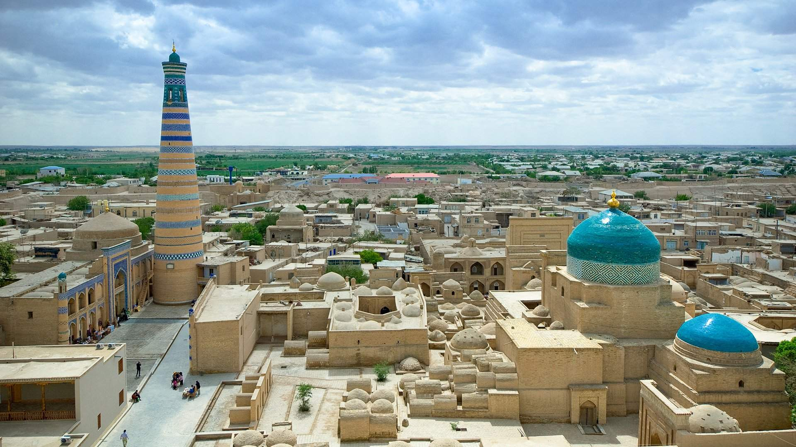
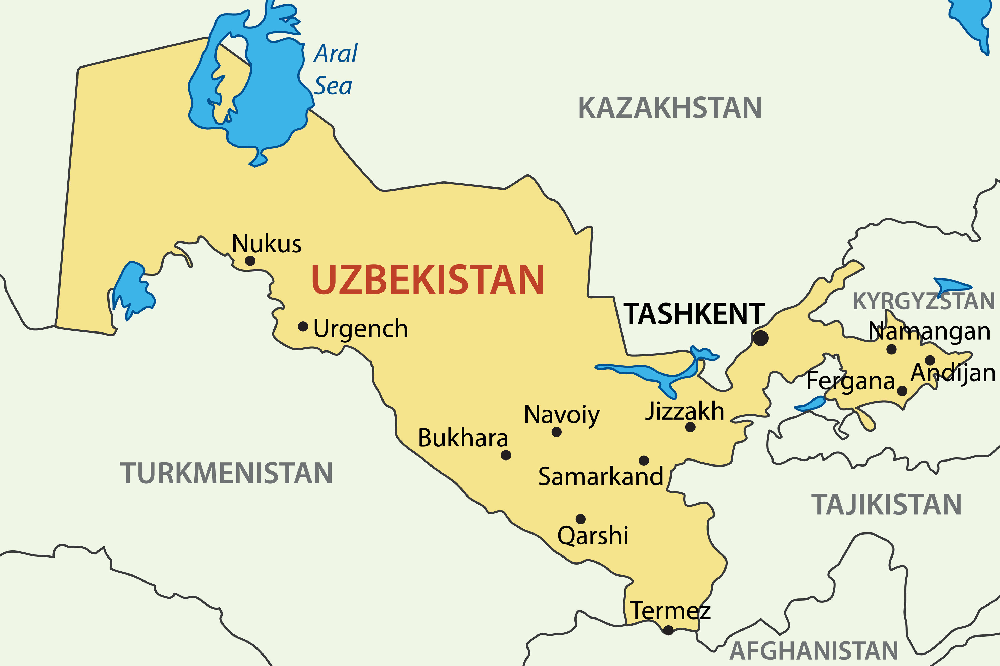
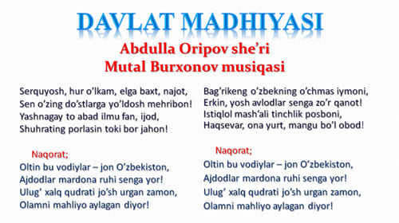
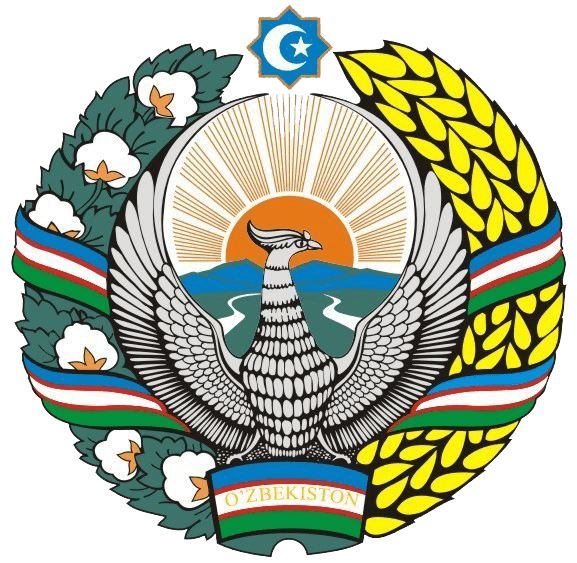

Welcome to Uzbekistan

Information about Uzbekistan
Oʻzbekiston (rasman: Oʻzbekiston Respublikasi, Ўзбекистон Республикаси) – Markaziy Osiyoning markaziy qismida joylashgan mamlakat. Poytaxti – Toshkent shahri. Davlat tili – oʻzbek tili. Maydoni – 448 978 km2[6]. Hozirda mamlakatning umumiy aholisi soni 36 milliondan ortiq[7][8]. Pul birligi – soʻm. Oʻzbekiston Respublikasi hududi 12 ta viloyat, Toshkent shahri va Qoraqalpogʻiston Respublikasidan iboratdir, shuningdek, u mustaqil, demokratik, dunyoviy va konstitutsiyaviy davlat hisoblanadi. Oʻzbekiston MDH, BMT, YXHT va SHHT aʼzosidir. Oʻzbekiston berk hududda yaʼni qirgʻoqqa ega boʻlmagan besh mamlakat bilan, yaʼni: shimoldan Qozogʻiston; shimoli-sharqdan Qirgʻiziston; janubi-sharqdan Tojikiston; janubdan Afgʻoniston; va janubi-gʻarbiy qismida Turkmaniston bilan chegaradosh.
Oʻzbekiston iqtisodiyoti bozor iqtisodiyotiga bosqichma-bosqich oʻtadi, tashqi savdo siyosati import oʻrnini bosishga asoslangan. 2017-yil sentabridan boshlab mamlakat valyutasi bozor kursi boʻyicha toʻliq konvertatsiya qilinmoqda. Oʻzbekiston paxta tolasini ishlab chiqaruvchi va eksport qiluvchi yirik taʼminotchi davlatdir. Mamlakatda, shuningdek, dunyodagi eng yirik oltin konlari mavjud. Sovet davridagi ulkan energiya ishlab chiqarish qurilmalari va tabiiy gazni yetkazib berish bilan Oʻzbekiston Markaziy Osiyodagi eng yirik elektr ishlab chiqaruvchisi boʻldi.

Symbols of Uzbekistan

Anthem of Uzbekistan

Coat arms of Uzbekistan

There are 12 regions in Uzbekistan